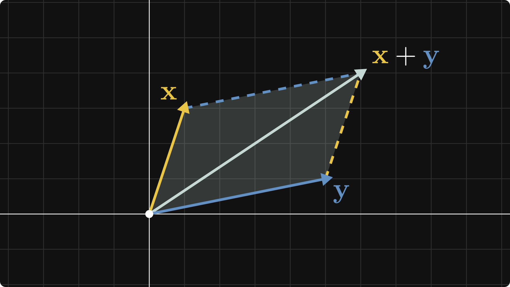

Recovering a Technical Post
This sample HTML is designed for wb2nb and
nb2wb.revert(). It includes prose, one recognized code
block, one unsupported code block, and a local figure.
Why This Example Exists
Reverse conversion is best at recovering structure. It turns prose into markdown cells, preserves code blocks, and keeps figures linked unless you opt into OCR.
def moving_average(values, window):
if window <= 0:
raise ValueError("window must be positive")
return [
sum(values[index:index + window]) / window
for index in range(len(values) - window + 1)
]
series = [3, 5, 8, 13, 21]
print(moving_average(series, 3))The next block uses an unsupported language on purpose, so the reverse path should preserve it as fenced markdown instead of dropping it.
graph LR
notebook[Notebook]
notebook --> html[HTML]
html --> notebook
What You Should See
- A markdown cell for this prose
- A Python code cell for the recognized code block
- A fenced markdown block for the Mermaid example
- A markdown image that stays linked without OCR